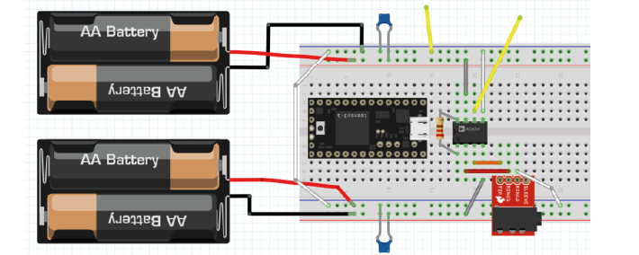
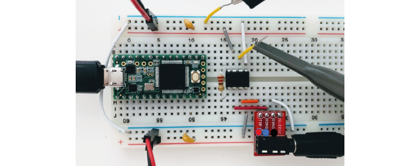
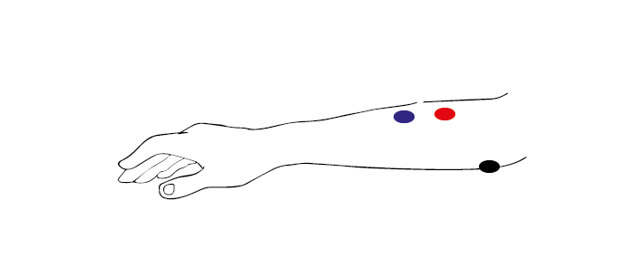

Exercises Day 3 TA¶
1. Differential Signals¶
1A. Measure across your fingers with the oscilloscope 1x probe. How big is the amplitude of this signal? Compare this to the size of a spike, around 100 µV. Could you see a spike on top of that noise?
2. Reference electrode¶
So far, we have only considered the signal coming into our recording electrode, relative to ground. We will now add a reference electrode in the simulator.
You can think of the small square waves as spikes you are trying to detect, and the sine wave (that both reference and your measurement electrode share) as the background. This background could be slow EEG signals or 50Hz noise, which is likely to be present at both electrodes.
Step-by-step, we are going to build our ‘goal’ circuit has the following properties:
Input from a measurement electrode (spikes)
Input from a reference electrode (common noise)
Output: Reference subtracted from measurement, multiplied by gain
Does not draw current from the electrode
2A. Connect the reference and spike signal directly to the op-amp in open-loop configuration to subtract the reference. Connect the output of the amplifier to the PC. Run the simulation. What (in V) is the amplifier giving as output?
2B. Try adding a wire (with no resistors) as a negative feedback connection to stop the amplifier from saturating.
Why does this not work?
2C. Using two resistors on each side of the ‘-’ input, make a voltage divider. What is the output now?
2D. We’re still not outputting our spikes. What went wrong? Try to figure this out but talk to a classmate or a TA if you get stuck.
Check that your have a correct differential amplifier circuit before moving on.
2E. In the simulator we are working with ‘perfect’ components. In real life, these parts have to be physically produced and have certain degrees of precision, called ‘tolerances’. A resistance with 10% tolerance can be 10% higher or lower than the stated value. Simulate a case in which one of the resistors is 10% higher and another is 10% lower. What happens?
Return the resistors to balanced values. Now add resistors directly after the input signals, to act as your electrode (for both the signal and reference). You can simplify the electrode to a 300kOhm resistor, or a 800 pF capacitor if you prefer.
2F. What happens to the signal if there is a 5% difference between the impedance of your 2 electrodes? Can we use this shiny new differential amplifier to record neural signals?
We worked so hard to avoid drawing current from our frail electrode signal, and now we’re telling you to put big voltage dividers right at the inputs of our op-amp? That seems bad.
Also, as we’ve just simulated, often op-amps do not have equal input impedances across + and -! This is similar to the example form earlier where we modelled a long wire, except that now you have two wires of different lengths in front of your inputs. If you’ve ever measured electrode impedance, how much variation was there between electrodes?
To get this differential amplifier to work, each electrode and resistor would have to be identical, which is, in practice, impossible.
2G. How can we preserve the nice differential properties of the amplifier we just built, but still have our signals go straight into like a ‘+’ terminal on an op-amp to avoid impedance imbalances, and to avoid drawing current through voltage dividers? Build that circuit.
TA Note
2A: https://tinyurl.com/yemp5rve
2B: It doesn’t work if they only put a wire connection as feedback. They need at least 1 resistor for the simulator to not give an error, because otherwise, they are asking the output of the amplifier, the - input and the reference input to all be at the same voltage when they are not, and the simulator can’t solve the circuit.
Why does putting just one resistor cause saturation? In that case, the (-) input would be receiving 60Hz 5V signal and trying to output the 120Hz 10mV difference that it is seeing on the (+) input to try and match both inputs. The amplifier does everything it can to make the - input equal to the + input. It outputs a voltage trying to increase the voltage at - every time there is a spike. But, because the - input is directly connected (via only a wire) to the voltage supply, it *must * have the same voltage as the voltage supply. Otherwise we’d have two different voltages in the same wire. The amplifier keeps reading that it has not succeeded to bring the - to the + level so it keeps its connection to the + rail, outputting the max voltage it can, i.e. saturating. All the voltage it outputs is actually lost over the resistor. Here’s a simplified circuit with a direct voltage source instead of alternating just to keep it simple. https://tinyurl.com/yyrs7o6t If you change the voltage on the variable voltage source on the right hand side, you can see that increasing the provided voltage only causes the voltage drop over the resistor to increase
2C: https://tinyurl.com/yzz5ht4f
2D: https://tinyurl.com/yg63xmm5 put ‘+’ in middle of voltage divider to ground. yay this is a diff amplifier!
Differential amplifier: https://tinyurl.com/ygmn8kf2
2E - F: this diff amp relies on a careful balance of impedances that isn’t realistically achievable.
2G: Solution: use 3 op-amps. 2 act as buffers for the reference and measurement electrode, the third amplifies the difference between them. Then the differences in input impedances don’t matter! https://tinyurl.com/yz8d8e67

3. EMG circuit¶
We now have all the steps of the acquisition in place to simulate a lab experiment. We are going to build an EMG circuit on the breadboard, using:
The electrodes in your kit. The disposable electrodes in the kit are single-use, so do not attach them until you are sure your circuit is working and that you have the correct position (see below).
The electrodes clip onto the cable with three wires. We’ll be using an audio-to-breadboard jack to get the signal from the electrodes into the breadboard.
An instrumentation amplifier as our ‘headstage’. This is the datasheet for the instrumentation amplifier in your kit.
We will first test the circuit using the Picoscope to read out the signal. Tomorrow, we will use the Teensy as our acquisition board to digitize the data.
Warning
Your kit contains surface electrodes that we will use for EMG. These measurements involve attaching yourself to a circuit, so follow these rules to be safe:
Do not use anything other than the recommended batteries to power your circuit. Do not connect your circuit to mains supply for power, ground, anything.
Only connect the EMG electrodes to one arm. Don’t attach them to both arms. This is to avoid any current travelling across your heart.
If you are using a laptop, disconnect your laptop charger & run from battery while the electrodes are attached to you. This is to prevent any surges from mains supply from backpropagating through your laptop, to you.
3A. Replicate the following circuit:
Bypass capacitors = ‘104’
Resistor: 220 Ohm
3B. Now attach the surface electrodes onto the ends of the electrode cable, and click the jack into the breadboard adaptor.
Each electrode corresponds to a different pin on the breadboard adaptor:
Black cable = ground electrode = Ring 1
Blue cable = ‘-’ (reference) electrode = Ring 2
Red cable = ‘+’ electrode = Tip
3C. Attach your oscilloscope as shown:
If you tap the electrodes, you should see the trace of your PicoScope respond. If not, troubleshoot your circuit until you do.
Make sure your Picoscope responds to tapping your electrodes before continuing! Ask a TA for help if you get stuck.
3D. Place the measurement and reference electrode very close together, on the part of the forearm where you can feel a muscle when tensed. Place the ground on the elbow, where you can feel bone. You should see a clear signal in the oscilloscope when you tense your muscles. Moving your arm will cause large motion artefacts (why?) so try to find a setup that gives you a consistent and clear signal.
3E. The resistor across the instrumentation amplifier sets the gain of the amplifier. Change the gain of the amplifier by changing Rg. What happens when the value for Rg is very low?
TA Note
Problems here are often:
Forgetting to connect both grounds
Being offset by 1 position in breadboard. Get the group to help each other spotting small errors like that.
If they have a lot of noise on their recording, try:
Disconnecting from 60/50Hz contaminated ground by using laptop battery
Twisting or braiding the cables
3E: The lower the value for Rg the more gain we should get. I tried going from 220Ohm to 100Ohm and it worked but I didn’t get a picture. I did not manage to get it to saturate. With a larger resistor for Rg we do get less gain. Formula for instrumental amplifier gain = (R3/R2){(2R1+Rgain)/Rgain}